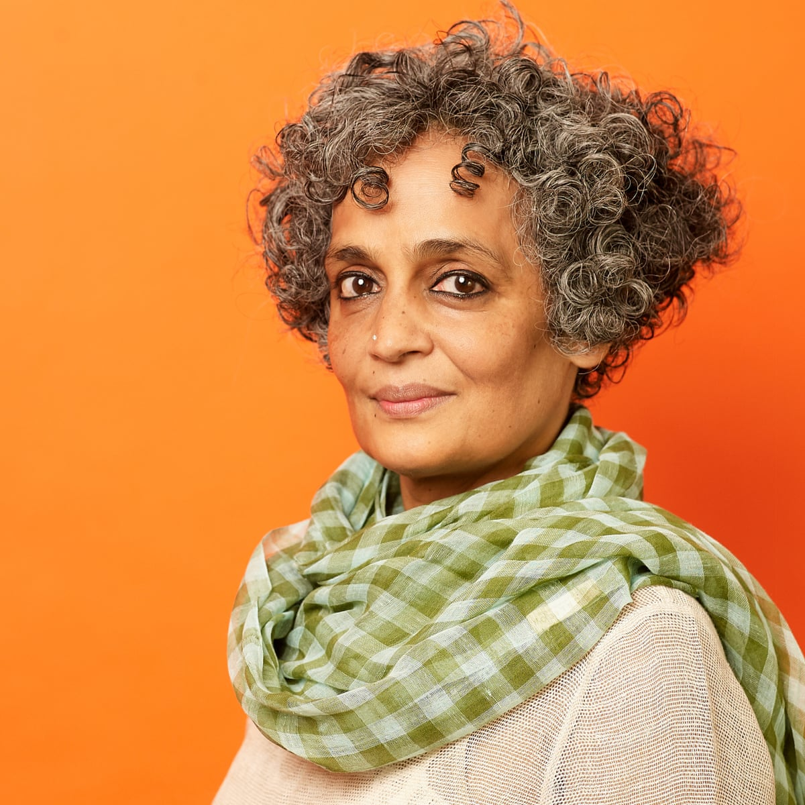
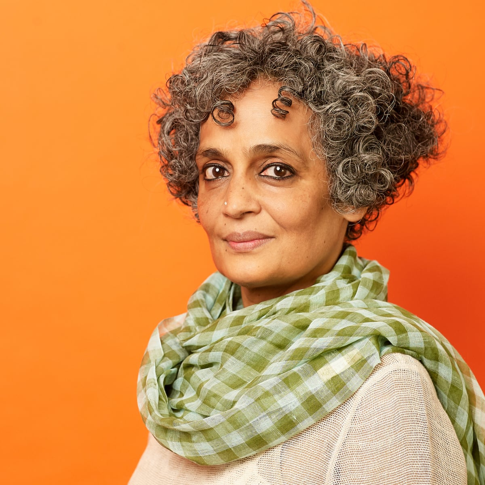
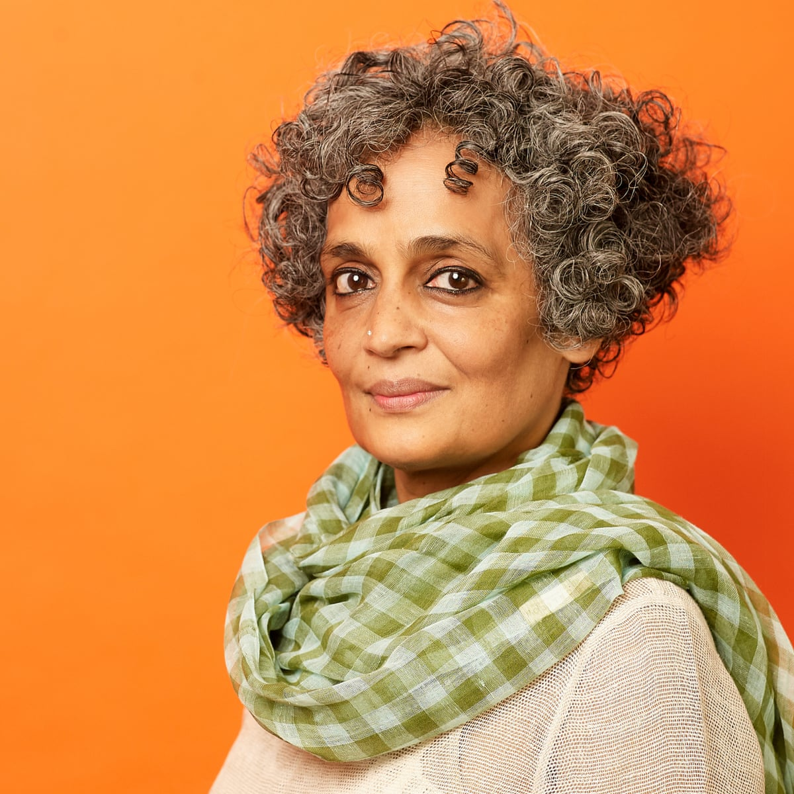

सुज़ाना अरुंधति रॉय का जन्म 24 नवंबर 1961 को हुआ था। उनके उपन्यास द गॉड ऑफ स्मॉल थिंग्स (1997) के लिए जाना जाने वाला एक भारतीय लेखक है, जिसने 1997 में फिक्शन के लिए मैन बुकर पुरस्कार जीता और एक गैर-प्रवासी भारतीय लेखक द्वारा सबसे अधिक बिकने वाली पुस्तक बन गई। वह एक राजनीतिक कार्यकर्ता भी हैं जो मानवाधिकारों और पर्यावरणीय कारणों में शामिल हैं। अरुंधति रॉय का जन्म शिलांग, मेघालय, भारत में हुआ था, मैरी रॉय, केरल की मलयाली सीरियाई ईसाई महिला अधिकार कार्यकर्ता और कलकत्ता की बंगाली हिंदू महिला बागान प्रबंधक राजीव रॉय थीं। । जब वह दो साल की थी, उसके माता-पिता का तलाक हो गया और वह अपनी मां और भाई के साथ केरल लौट आई। एक समय तक, परिवार रॉय के मामा के साथ ऊटी, तमिलनाडु में रहता था। जब वह पाँच वर्ष की थी, तो परिवार केरल चला गया, जहाँ उसकी माँ ने एक स्कूल शुरू किया। उसके करियर में, रॉय ने टेलीविजन और फिल्मों के लिए काम किया। उन्होंने पटकथा लिखी थी जिसके लिए एनी गिव इट इट द वेस (1989), वास्तुकला के एक छात्र के रूप में उनके अनुभवों पर आधारित फिल्म थी, जिसमें वह एक कलाकार और इलेक्ट्रिक मून (1992) के रूप में भी दिखाई दी थीं। दोनों को उनके पति प्रदीप कृष्णन ने उनकी शादी के दौरान निर्देशित किया था। रॉय ने 1988 में सर्वश्रेष्ठ एनी स्क्रीनप्ले के लिए राष्ट्रीय फिल्म पुरस्कार जीता, जिसके लिए एनी इसे देते हैं। उन्होंने 1994 में उस समय ध्यान आकर्षित किया जब उन्होंने शेखर कपूर की फिल्म बैंडिट क्वीन की आलोचना की, जो फूलन देवी के जीवन पर आधारित थी। उनकी फिल्म की समीक्षा का शीर्षक था " द ग्रेट इंडियन रेप ट्रिक ", उसने" उसकी अनुमति के बिना एक जीवित महिला के बलात्कार को रोकने का अधिकार "पर सवाल उठाया और कपूर पर देवी का शोषण करने और उसके जीवन और उसके अर्थ दोनों को गलत तरीके से पेश करने का आरोप लगाया।

| पिछले पृष्ठ पर वापस जाएं। | मुख्य वेबसाइट पर वापस जाएं। |